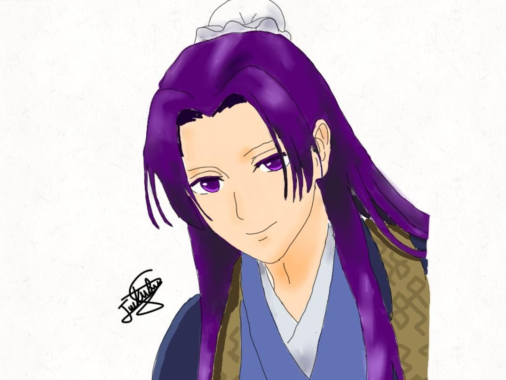
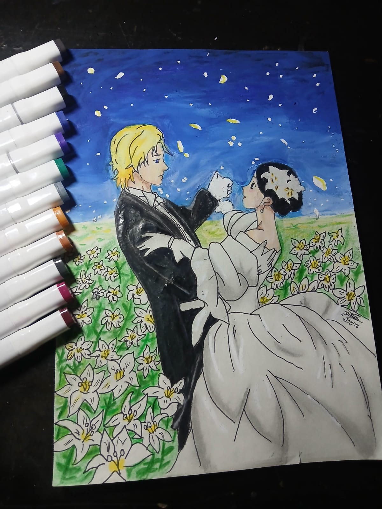
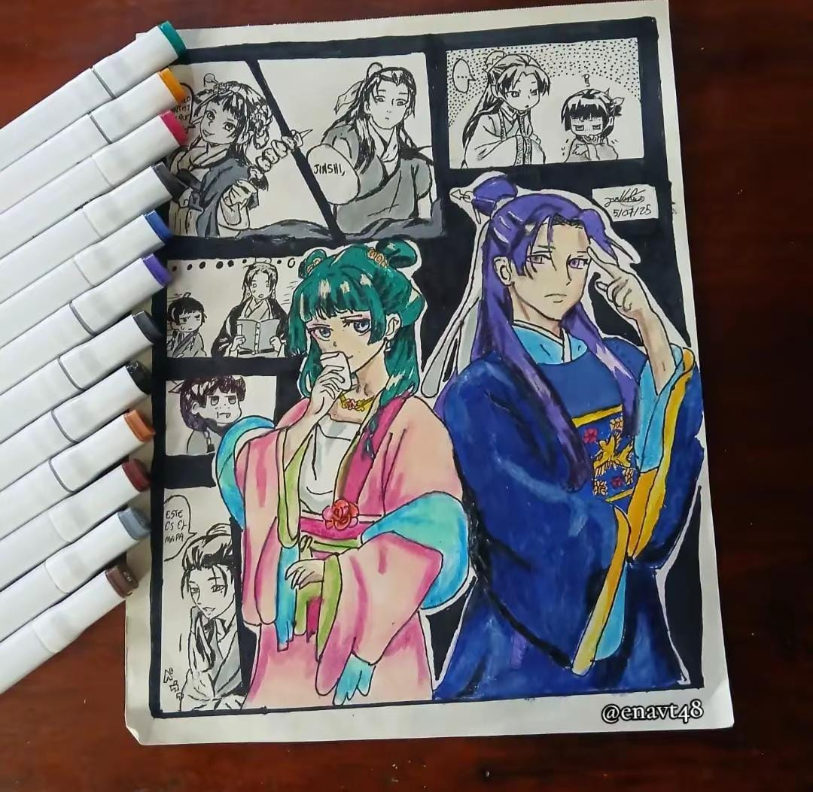
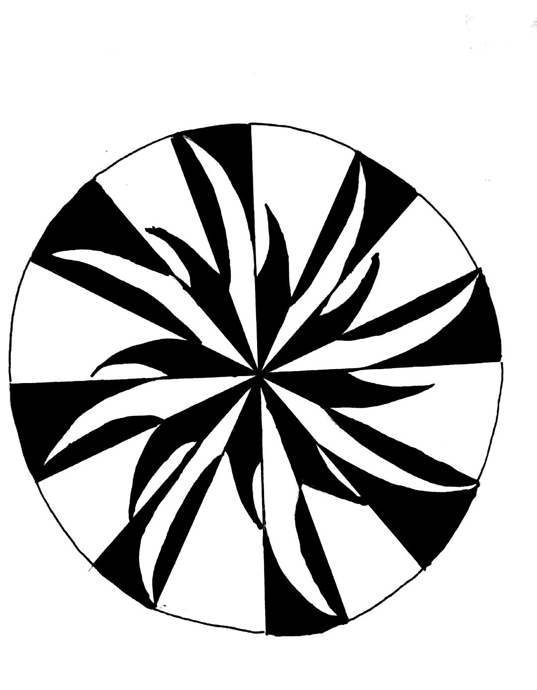
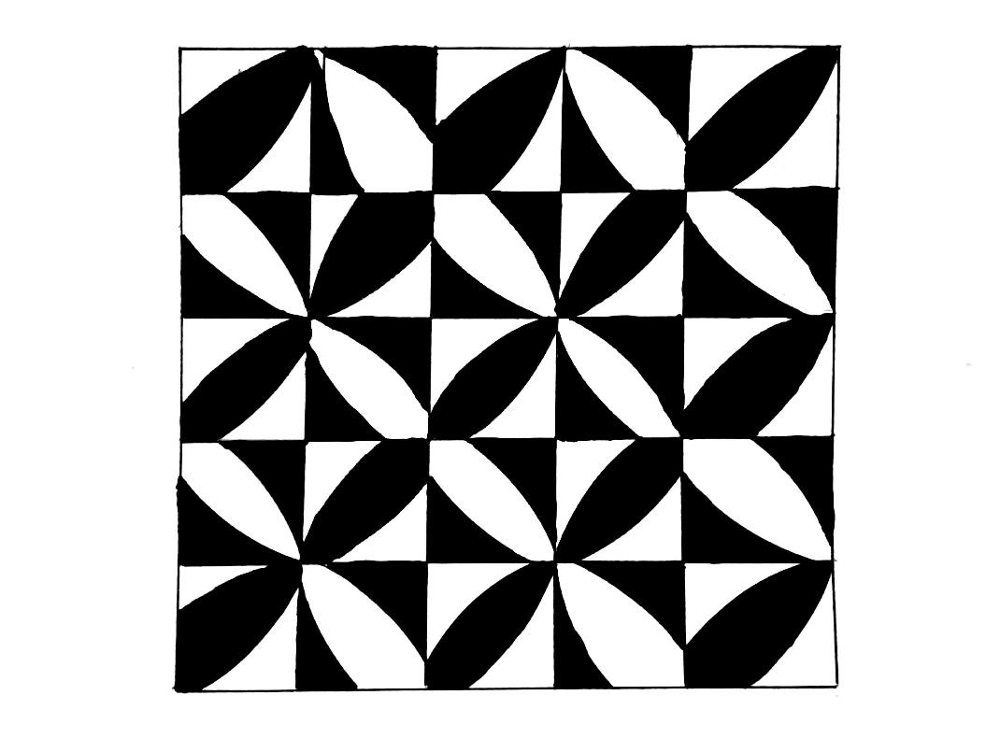
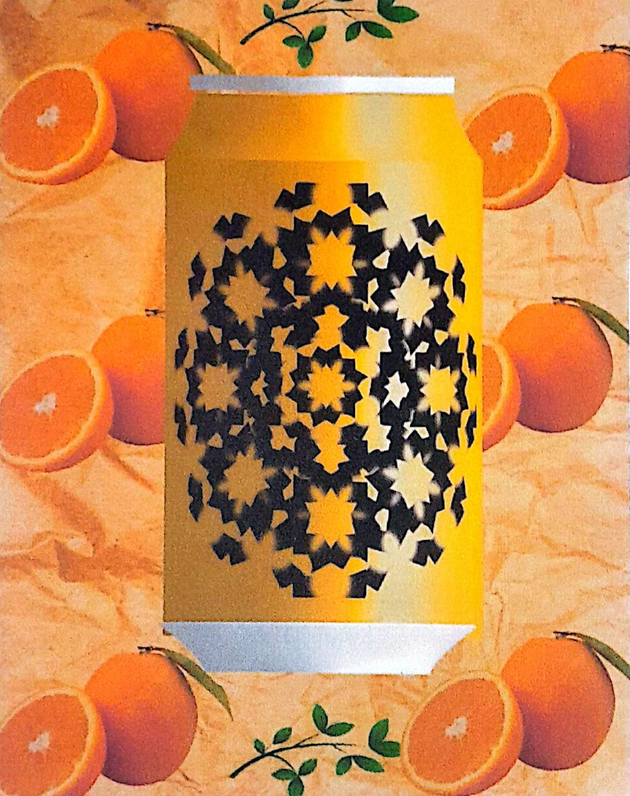

Proyectos
Estos son algunos proyectos que he desarrollar durante mi tiempo libres.
Proyecto 1: Dibujo de una animación de jinshi para tiktok

video de animación 2d.
Proyecto 2: Dibujo

Dibujo sobre un anime.
Proyecto 3: Dibujo de jinshi y maomao

dibujo del anime los diarios de la boticaria .
Proyectos
Estos son algunos proyectos que realize en el primer semestre.
Proyecto 1: trabajo de diseño básico

diseño básico.
Proyecto 2: trabajo de diseño básico

diseño básico.
Proyecto 3: trabajo de diseño básico

diseño básico.